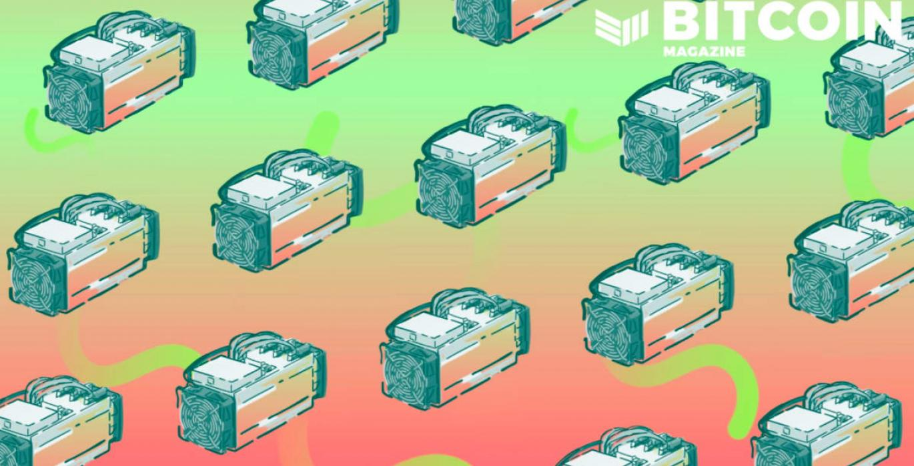

April 1, 2022
Why The Navajo Are Mining Bitcoin
William Foxley - Bitcoin Magazine
April 19, 2022
William Foxley - Bitcoin Magazine

The technology of bitcoin provides an avenue for growth and financial empowerment unhindered by the American government
At nearly 400,000 people, the Navajo Nation is one of the largest Native American tribes in the United States. It’s also one of the most impoverished, with poverty statistics closer to the world’s least developed countries than its neighboring cities of Phoenix, Arizona, or Santa Fe, New Mexico.
Nearly 50% of Navajo are unemployed, 40% don’t have running water, 32% live without electricity, and over 30% live below the poverty line, according to an April 2021 testimony before Congress.
Generational poverty for Native American populations has been the focus of an abundance of government research and spending. Most solutions for the issues center on injecting federal dollars into local economies through subsidies, special business licenses and community work.
What these solutions don’t propose, however, is giving tools for lasting individual empowerment to these indigienous populations. Indeed, the Navajo Nation is one of the most visible representations of living in a split monetary system: One with access to American capital, but lack of formal control over capital deployment.
But a silent financial revolution is occurring on Navajo land, and it’s fueled by the growth of a new industry: Bitcoin mining. “A Navajo person can’t own the land…”
The broken Navajo economy is the product of numerous treaties signed between the United States government and tribes during America’s westward expansion. Most treaties abdicated direct control of tribal people to the tribe itself, including government functions, taxation rights and law enforcement. But two major responsibilities remained in U.S. hands: trusteeship of land and control of the currency.
These stipulations have had predictable financial consequences.
As the trustee, the federal government leases Indian land out for uses such as farming, logging or mining. The U.S. government also manages the money accrued from such activities on behalf of the nations. Decades of mismanagement culminated in 2012 with a $492 million settlement between 17 tribes and the Obama administration.
Yet, the leasing system itself continues to hamper progress against poverty.
“The federal government took the land rights away from the Navajo people,” Navajo Tribal Authority President Walter Hasse told Compass Mining in an interview. “So a Navajo person can’t own the land that their home is on. If you don’t own the land, then how do you borrow the money to build a house on the land?”
Tribal sovereignty does not extend to currency either. As U.S. citizens, Native Americans are taxed in dollars. And while it’s difficult to say the dollar has been a net negative for tribes, restrictions around how money can be used within the incumbent financial system could be considered one.
Called “the buckskin curtain,” Indian tribes have not only been slow to adopt financial tools, but impeded from accessing them due to national sovereignty. Only 32 Native American financial institutions are in existence today, constituting the smallest percentage of minority-owned deposit institutions compared. Among other concerns, tribes worry accepting a bank charter from the Office of the Comptroller of the Currency (OCC) would interfere with their national status.
For example, where would a banking dispute be heard in court? In reservation courtrooms or in Washington? And what evidence do Native American tribes have that due process would be followed?
These questions have pushed tribes outside of the U.S. financial system by either being unable or unwilling to operate within the commercial banking sector.
Employment and currency only show half of the picture of economic damage though.
During the 20th century, energy firms outside of Navajo land signed contracts with the Navajo Nation to source and extract its abundant energy resources, especially coal and uranium.
hat coal was used to power cities from Santa Fe, New Mexico, to Los Angeles, California – illuminating, watering and powering a once sparsely populated portion of the United States. Years later, the power plants are coming down, leaving the Navajo little to show for leasing their land to outsiders, minus poisoned groundwater and abandoned coal pits.
Over 4 million tons of uranium were also mined on Navajo land from 1950 onward. While it fed Uncle Sam’s Cold War appetite, Navajo uranium would have devastatingly-long terminal effects on the indiginous people and their land. Some 27% of Navajo have heightened levels of uranium in their bodies, according to a 2016 study, while over 500 open-air uranium mines remain in various stages of cleanup. Before Bitcoin, “mining” has carried very negative connotations for most of the Navajo Nation.
In 2017, a small Canadian firm named West Block approached the Navajo about tapping Navajo energy for a Bitcoin mine on Navajo land.
Currently using 8 megawatts (MW), the new mine is already in the process of doubling its size. That’s equivalent to about 3,000 machines of various types powering and protecting the Bitcoin network using Navajo energy.
But it’s not just about the machines. It’s about the output of those machines in the context of a people group who’ve gone without many of the benefits the nominal American enjoys.
For example, the facility currently employs two full-time employees. With the expansion, that number will grow to eleven. The money created from the mine will then circulate into the local economy. It may seem insignificant now, but mining bitcoin on Navajo land is a very real source of future Navajo wealth, employment, and economic recovery.
The Navajo mines also represent the Navajo Nation creating wealth for themselves with their energy. Bitcoin mining brings demand for energy to wherever the energy source is. Navajo energy now has a non-stop and quickly-growing demand brought to their land with the profits paid to the Navajo Nation.
Lastly, the Navajo Bitcoin mines represent financial inclusion. Bitcoin mining is the first small step for broad bitcoin adoption by the Navajo Nation. Opting into a free and open-internet money protocol with a physical presence among the Navajo has unlimited potential for economic growth and wealth creation.
Join the community